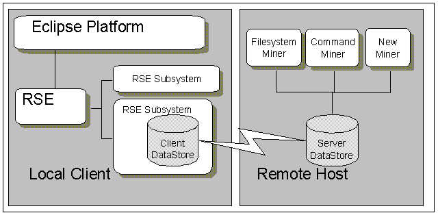

The RSE uses the concept of subsystems as a common abstraction for remote tooling. Subsystems provide public interfaces that are called when some remote tool or resource needs to be communicated with. As long as the appropriate public interfaces are implemented, the means of communicating with these remote tools and resources is up to the developer of the subsystem. Whatever that might be, some kind of communication layer is required to access tools on the host. One such means that is used by existing RSE Subsystems and can be reused is the DataStore framework.
The DataStore communications framework is used to provide remote access and tooling for the Remote Systems Explorer. It is a communications layer, in-memory data repository and a pluggable tooling framework. While Eclipse provides the ability for local tools to plug into the Eclipse workbench, DataStore provides the ability to integrate remote tools into the Remote Systems Explorer. When implementing subsystem APIs, a particular implementation may provide remote function by leveraging DataStore.
In an RSE subsystem, the goal of the DataStore is to provide the bridge to tools and resources on the host. To interact with a remote tool, a DataStore client communicates over a network with a DataStore server. Data and commands are transferred between the client and server via the DataStore communication layer. Information that is communicated between each side is kept in memory with the DataStore repository. Both the client and server DataStores have this repository and it is the responsibility of the DataStore communication layer to keep the contents of each of these repositories in sync. All the DataStore data on the server side is replicated to the client and and vice versa.
The DataStore framework is generic in the sense that it can be used to facilitate any kind of remote tooling. There are no specialized APIs or artifacts that are geered towards a particular use. How DataStore is used is determined by the tool extensions, Miners. Miners are typically either adapters to tools on the host or are tools themselves. These extensions determine the meaning of data used to represent objects, relationships and the commands that can be issued on the represented objects. Miners shape the DataStore by contributing schemas to the pool of information in a DataStore repository. Because the client and server DataStore repositories are synchronized, the DataStore clients have access to the miner schemas and, using that information, they are able to communicate with the tools on the host. Because the server has access to those miner schemas, each Miners may also communicate with other Miners on the host in the same way a client can.
A Filesystem miner can shape the DataStore by contributing a schema that describes file systems and how they should be interacted with. The schema could describe files, folders, properties of files and relationships between them as well as commands for querying folders or renaming files. An RSE subsystem, can then provide browsing capabilities to a remote file system by sending commands via the DataStore client to the Filesystem Miner on the host. Another miner can contribute its own schema or extend the existing Filesystem Miner schema to leverage or contribute to the existing file system tool.
This guide explains all underlying artifacts and model of the DataStore, its relationship to RSE, and highlights the important APIs available for your use.